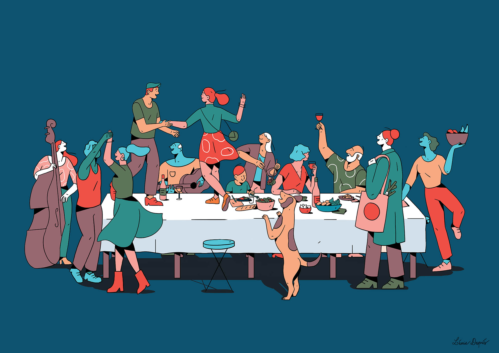

Et si nous retrouvions le sens de l’échange ?
L’énergie sociale de l’échange est un antidote subversif au monde du « sans contact » et de la « distanciation sociale ».
Après un processus séculaire de colonisation économique de nos imaginaires et des décennies brutales de néolibéralisme, l’échange fut assimilé à l’échange économique, au « libre » échange dans un Grand Marché connecté, concurrentiel, organisant la circulation accélérée de flux de marchandises et en bout de chaîne le drive, le clic, les injonctions consuméristes des algorithmes collecteurs de données personnelles et la misère pour beaucoup. Jusqu’à détruire les échanges avec le vivant, dévitaliser les communautés humaines, et les rendre infiniment vulnérables. Or, face au choc pandémique, les sociétés, profondément et très inégalement meurtries, ont pu compter sur quelques ressorts fragiles d’autres formes d’échange.
Elles ont tenu grâce à l’échange non monétaire, non économique, aux multiples réseaux autogérés de solidarité, de coopération, anciens et nouveaux, comme le réseau Covid-Entraide (1). Un échange fait de partage, de mise en commun, d’entraide, de gratuité, d’attention aux milieux de vie. Cette part non monétaire de l’échange concerne aussi l’engagement, sans contrepartie monétaire, de celles et ceux qui ont assuré l’accès aux services et biens essentiels, culture comprise, sans compter, sans calculer, sans rechercher l’équivalence marchande du « donnant-donnant », souvent la peur au ventre, alors que leurs rémunérations sont le plus souvent injustement sous-évalués. La dignité n’a pas de prix.
Elles ont aussi tenu grâce à des luttes de plus en plus rudes, ayant empêché que l’échange marchand ne soit venu totalement à bout des solidarités collectives, de la protection sociale, de la part non marchande de l’échange social, des prestations de la sécurité sociale ou des collectivités publiques. Cet échange, monétaire mais non marchand, lorsqu’il disparaît ou s’affaiblit est source d’un chaos violent et inhumain. Les images d’une mort traitée de manière logistique, statistique, sous l’angle du transport, du stockage, au moment des pics de l’épidémie devraient hanter nos esprits. Cet échange non marchand sera au cœur de l’urgente reconversion industrielle et agricole en assurant la continuité des droits et de la rémunération du travail.
Enfin, la société a tenu aussi par la vitalité d’échanges marchands de proximité, de circuits courts, des marchés locaux, n’ayant rien à voir avec le Grand Marché global, anonyme, hors-sol et censé organiser la société globale à partir d’un système de prix, de codes-barres, du « sans contact ». Les marchés locaux sont au contraire des lieux de contact, d’échanges sociaux, des agoras où les biens échangés sont indissociables des conditions de leur production et des liens qui se tissent entre les humains et avec la Terre nourricière.
Alors, il nous reste à crever les bulles, à destituer le Grand Marché et ses institutions qui dévorent la Terre et les communautés du vivant, à relocaliser sans nationalisme et de manière coopérative, et à mettre toute notre énergie collective à renforcer et instituer ces autres formes d’échange, sans exclure la mise en place de formes contraintes et justes d’échange sous la forme de rationnements.
Léonie Després est une illustratrice française qui travaille également pour des studios d’animation à Londres. Aimant particulièrement dessiner des personnages joyeux, modernes, épurés et très colorés, elle cherche à mettre l’accent sur les relations humaines ainsi que les sources de joie du quotidien.
leonie-depres.jpeg
Genevieve_Azam.jpeg
Geneviève Azam est économiste, essayiste, membre d’Attac, compagne d’Alternatiba, chroniqueuse à Politis et membre du collectif de rédaction de la revue en ligne Terrestres. Son dernier ouvrage paru est Lettre à la Terre, 2019, collection Anthropocène, Seuil.